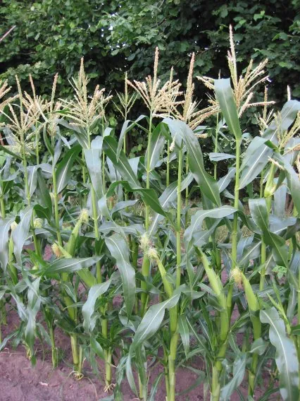
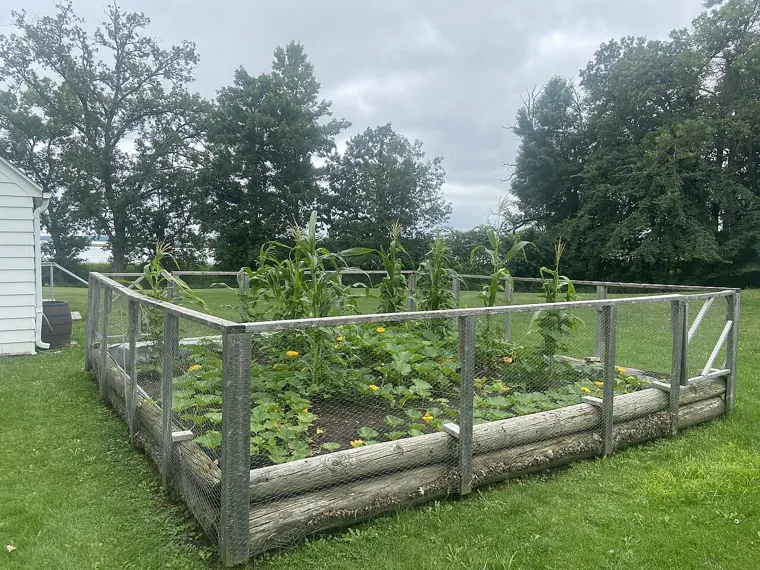

Para qué sirve el montículo, de qué tamaño darle forma y el orden escalonado para sembrar maíz, frijol y calabaza, más el bloque exacto que necesita el maíz para polinizarse.

Foto: Rasbak at Dutch Wikipedia · CC BY-SA 3.0, vía Wikimedia Commons.
Un pedazo soleado, tierra trabajada y espacio para un BLOQUE de maíz. Una sola hilera no sirve
Semilla de maíz duro (flint) o dentado (dent), de un frijol TREPADOR (ejote de palo, no tipo arbusto) y de una calabaza de invierno o calabaza de Castilla de guía
Un suelo lo bastante tibio para el maíz, alrededor de 13°C55°F, así que esta es una siembra de fines de primavera, después de la helada
Las Tres Hermanas son maíz, frijol y calabaza cultivados juntos en un montículo elevado. El montículo y el orden de siembra son las partes que la gente se salta, y son las que hacen que funcione. Aquí está cómo darle forma a uno y sembrarlo, y dónde están sus límites.
¿Para qué sirve el montículo?
Un montículo es una loma baja de tierra. Levantar la zona de siembra un palmo sobre el suelo hace que se caliente más rápido en primavera y que drene mejor. El maíz y la calabaza, que aman el calor, quieren las dos cosas en suelos fríos y húmedos al principio de la temporada. En un clima seco el consejo se invierte: un montículo elevado deja escurrir el agua que necesitas que retenga, así que allí los hortelanos aplanan la parte de arriba y le hacen una hondonada poco profunda para que se junte el riego. (Las fuentes de extensión universitaria describen el calentamiento y el drenaje. Tómalo como una buena razón para hacer el montículo. No es un efecto preciso y medido sobre la cosecha.)
¿De qué tamaño le doy forma al montículo?
Hay dos tamaños comunes, los dos de guías de extensión universitaria. Elige según el espacio que tengas:
Una loma pequeña: unos 30 cmun pie de alto y 45–90 cmde 18 pulgadas a 3 pies de ancho, con 3-4 plantas de maíz. Separa las lomas 0.9–1.2 m3–4 pies, en todas las direcciones.
Un montículo más grande: de unos cuantos pies de ancho, con 7-10 plantas de maíz.
Construyas el que construyas, el espaciado del maíz dentro de él y los huecos entre montículos se fijan para que todo el pedazo funcione como un bloque. La siguiente sección explica por qué eso es obligatorio.
¿Cómo se acomodan los tres cultivos?
Esta es una cama de las Tres Hermanas acomodada por el planificador. El maíz va en su bloque, el frijol al pie del maíz y la calabaza llena los huecos entre los montículos, tal como lo calculan las reglas de colocación:
36 × Maíz
27 × Ejote
4 × Calabaza de verano
La disposición real en una cama de ejemplo de 10 pies, la misma que dibuja el planificador.
¿Por qué el maíz tiene que ir en bloque y no en hilera?
Este es el error que arruina una primera cama de las Tres Hermanas, así que va primero. El maíz se poliniza por el viento. El polen cae de la espiga de arriba y tiene que caer en los pelos de abajo. Una sola hilera decorativa deja que el viento se lleve la mayor parte, y salen mazorcas con huecos donde nunca se formaron los granos. La solución es sembrar el maíz en un bloque de varias hileras cortas para que el polen tenga vecinas donde caer:
El maíz necesita un bloque de al menos tres hileras cortas lado a lado para un buen cuajado de granos, y cuatro hileras es mejor.
Si no lo sigues, la siembra fracasa. El planificador no lo permite.
Cómo funciona: El maíz se poliniza por el viento y es protándrico (cada planta suelta su polen antes de que sus propios pelos estén listos). Las espigas sueltan polen que tiene que caer en los pelos (estigmas) de plantas vecinas. En una sola hilera, buena parte del polen se lo lleva el viento fuera de la hilera, y cada pelo que no alcanza es un grano que falta.
Evidencia: cotejada con 5 fuentes en la literatura basada en investigación.
Always plant corn in blocks of at least four rows. Corn planted in a single row will have much of its pollen blown out of the row, and will produce ears that have blank areas where kernels did not form.
This crop is wind-pollinated; therefore, plant in blocks of several rows rather than 1 or 2 long rows to ensure full ears.
richmond.ces.ncsu.edu
Glass Gem CornNC State Extension, Richmond County Center
When tassels start dropping pollen, stalks can be gently shaken. This mimics wind and will release the pollen to float down to the silks.
Solución
Siembra el maíz en un bloque de varias hileras cortas en lugar de una sola hilera larga; cuatro hileras es lo mejor. En un rincón pequeño, sacude con suavidad los tallos mientras las espigas sueltan polen, o pasa una espiga cortada por encima de los pelos, cada pocos días. O deja fuera el maíz y dale a los frijoles un enrejado.
Agrupa tus montículos por la misma razón. Un bloque apretado de lomas se poliniza; una fila de lomas separadas no.
¿Siembro todo al mismo tiempo?

Una cama establecida en el Mille Lacs Indian Museum, en Minnesota. El maíz arriba y la calabaza extendida a sus pies. Foto: Myotus · CC BY-SA 4.0, vía Wikimedia Commons.
Los tres entran en días distintos. Cada uno recibe ventaja antes de que el siguiente lo amontone o le dé sombra, y el maíz en particular tiene que estar lo bastante fuerte para cargar el frijol antes de que este trepe:
Una trepadora asignada a un soporte vivo debe sembrarse después de que el soporte esté establecido, cuando el maíz mide ~6 pulgadas (~15 cm), más o menos a las 2-3 semanas. Sembrar ambos al mismo tiempo es demasiado pronto.
Si no lo sigues, pierdes cosecha de verdad. El planificador te avisa.
Cómo funciona: Carga. Una planta de frijol trepadora sobre un tallo inmaduro y mal anclado lo tumba; los manuales del servicio de extensión basan la espera en la altura del soporte (maíz de ~6 pulgadas) como indicador de que ya está lo bastante enraizado para soportar la carga de la trepadora.
Evidencia: cotejada con 2 fuentes en la literatura basada en investigación.
En la práctica, a lo largo de unas tres a cuatro semanas:
Primero el maíz, cuando el suelo esté tibio (alrededor de 13°C55°F). Siembra 5-7 semillas por loma, a unos 3.8 cm1.5 pulg. de profundidad; aclara hasta dejar las 3-4 más fuertes.
Después el frijol, cuando el maíz mida unas 15 cm6 pulgadas y pueda servir de enrejado. Siembra unas cuantas semillas de ejote de palo en un anillo alrededor del maíz.
Al final la calabaza, más o menos una semana después del frijol. Pon unas cuantas semillas en la orilla del montículo, aclaradas hasta dejar una, para que se extienda por el suelo entre las lomas.
Usa frijol trepador y una calabaza de guía. Los tipos de arbusto no sirven aquí, porque toda la estructura depende de que uno trepe y otro se extienda.
¿Hay algo que deba saber antes de empezar?
Todo el mundo repite la historia de que el frijol alimenta al maíz en esta temporada, y es una exageración. La mayor parte del nitrógeno de una leguminosa solo llega a sus vecinas después de que sus raíces y hojas se descomponen, en gran parte al año siguiente. El frijol mejora el terreno para más adelante; el maíz de este año recibe poco. La guía lo que dice la evidencia sobre la asociación de cultivos tiene el panorama completo, y la página del equipo de plantas de las Tres Hermanas muestra cada afirmación calificada. Cultívalo por la estructura real: un enrejado vivo, un acolchado vivo y un bloque que se poliniza. La transferencia de nitrógeno, en su mayor parte, todavía no ocurre.
Para leer más
Buenos lugares para leer más sobre la técnica de esta página. La calificación de cada tarjeta viene de las fuentes de esa misma tarjeta.